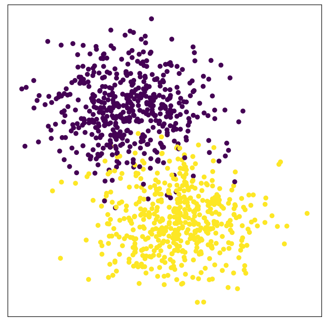
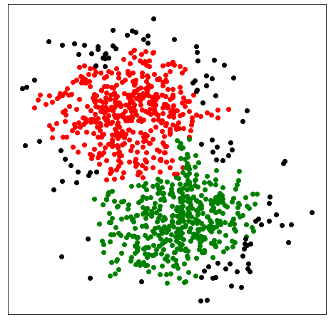

Outlier Detection¶
The outlier detection function of CLASSIX is fully dominated by the parameter of minPts. We have mentioned this parameter in the previous sections. However, if you would like to employ the
outlier detection, we should set post_alloc=False, then the outliers will be marked as -1 instead of being allocated to other clusters. The example is as below:
from sklearn import datasets
from classix import CLASSIX
import matplotlib.pyplot as plt
X, y = datasets.make_blobs(n_samples=1000, centers=2, n_features=2, random_state=0)
clx = CLASSIX(sorting='pca', radius=0.15, verbose=1, minPts=13, post_alloc=False)
clx.fit(X)
plt.figure(figsize=(8,8))
plt.rcParams['axes.facecolor'] = 'white'
plt.scatter(X[:,0], X[:,1], c=clx.labels_)
plt.xticks([])
plt.yticks([])
plt.show()
The groud truth label is:
The clustering result is:
All outliers output by CLASSIX are marked as black. As shown in the figure, the outliers classified by CLASSIX are far away from the cluster center points.